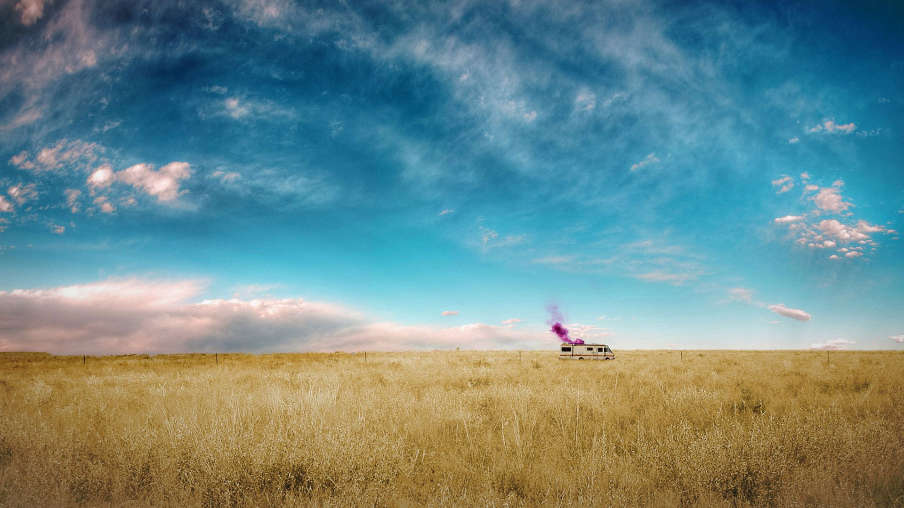

Plot

When chemistry teacher Walter White is diagnosed with Stage III cancer and given only two years to live,
he decides he has nothing to lose. He lives with his teenage son, who has cerebral palsy, and his wife, in New Mexico.
Determined to ensure that his family will have a secure future, Walt embarks on a career of drugs and crime.
He proves to be remarkably proficient in this new world as he begins manufacturing and selling methamphetamine with one of his former students.
The series tracks the impacts of a fatal diagnosis on a regular, hard working man, and explores how a fatal diagnosis affects his morality
and transforms him into a major player of the drug trade.
Season 1
The first season was originally intended to be nine episodes,
but due to the 2007–2008 Writers Guild of America strike only seven episodes were filmed.
It ran from January 20 to March 9, 2008.
Walter, diagnosed with inoperable lung cancer, conspires with Jesse to cook methamphetamine ("meth")
as a way to pay for his treatment and provide financial security for his family.
Jesse secures a recreational vehicle to cook in, while Walter devises a production route using unregulated chemicals,
creating a highly pure product tinted blue. After a run-in with the Mexican drug cartel, Walter adopts the name "Heisenberg",
with his "blue sky" meth his signature product. Hank and the DEA become aware of this new figure in the drug trade and begin their investigation.
Season 2
Jesse's dealers become unsafe, and Walter hires a corrupt lawyer Saul to connect them to a
high-profile drug dealer Gus as a buyer for their latest batch. Jesse dates his apartment manager Jane,
and she relapses on heroin; Jesse becomes unreliable. Walter refuses to pay him his half of the sale to Gus,
but Jane blackmails Walter. Walter returns to Jesse to apologize, but allows an unconscious Jane to choke on her own vomit.
With Jesse in rehab, Walter seems content until he witnesses a midair collision of two planes, a result of Jane's father,
an air-traffic controller, becoming distraught over her death while on the job.
Season 3
On April 2, 2009, AMC announced that Breaking Bad was renewed for a third, 13-episode season.
It premiered on March 21, 2010, and concluded on June 13, 2010. The complete third season was released on Region 1 DVD
and Region A Blu-ray on June 7, 2011. Gus offers Walter a job cooking meth at a hidden lab. Walter demands Jesse to be
his assistant rather than Gus' choice of Gale. Skyler learns of Walter's meth cooking and demands a divorce.
Hank's investigation leads him to Jesse, but he finds no evidence and assaults Jesse, forcing him into a short leave.
Hank is forewarned about an attack from two assassins, and kills them but he becomes paralyzed in the aftermath.
Jesse's behavior becomes erratic, and Gus replaces him with Gale. Later, Walter fears Gus will kill him and Jesse once
Gale learns enough about their methods, and instructs Jesse to kill Gale.
Season 4
On June 14, 2010, AMC announced Breaking Bad was renewed for a fourth, 13-episode season.
Production began in January 2011, the season premiered on July 17, 2011, and concluded on October 9, 2011.
Originally, mini episodes of four minutes in length were to be produced before the premiere of the fourth season,
but these did not come to fruition. Gus tightens security at the lab after Gale's death. Gus and Mike work to drive
a wedge between Walter and Jesse, seeking to coerce Jesse to be their solitary cook by capturing Walter while at the
same time eliminating the Mexican cartel. Skyler accepts Walter's meth cooking, and works with Saul to launder his earnings.
Hank, while recovering, tracks Gale's death to Gus and the drug trade. Gus releases Walter and plans to kill Hank.
Walter tricks Jesse into turning against Gus, and convinces Hector to detonate a pipe bomb in the same room as Gus, killing them both.
Season 5
On August 14, 2011, AMC announced that Breaking Bad was renewed for a fifth and final season consisting of 16 episodes.
Season five is split into two parts, each consisting of 8 episodes. The first half premiered on July 15, 2012,
while the second half premiered on August 11, 2013. In August 2013, AMC released a trailer promoting the premiere of
final season with Bryan Cranston reading the poem "Ozymandias" by Percy Bysshe Shelley, over timelapse shots of Breaking Bad locations.
After the death of Gus, Walter, Jesse, and Mike start a new meth business. When their accomplice Todd kills a child witness during their
theft of methylamine, Jesse and Mike sell their share to Declan. Walter produces meth for Declan, and Gus' former associate Lydia starts distribution in Europe,
which is so successful that Walter earns US$80 million, which he buries on the Tohajiilee Indian Reservation. Hank attempts to prove Walter is Heisenberg.
Walter kills Mike when he demands his share of the money and hires Jack's gang to kill Mike's associates and Jesse. The gang turns on Walter, kills Hank,
captures Jesse, and takes most of Walter's money. Walter uses the remainder to escape to New Hampshire. Walter intends to surrender, but changes course
after Elliott and Gretchen minimize his involvement in starting Gray Matter. He leaves his money in a trust which Elliott and Gretchen would administer for his children.
He confesses to Skyler that he dealt drugs for his own satisfaction rather than his family's financial security. At Jack's compound, Walter kills Jack and the rest of his gang
with a remote controlled machine gun and frees the imprisoned Jesse, who kills Todd. Wounded in the aftermath, he asks Jesse to kill him, but Jesse refuses and departs.
Walter reminisces in Jack's meth lab and eventually dies.